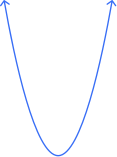

Fill in in your workbook on page 51. These will NOT be collected.
Recall: polynomial
type of expression with “many terms”
separated by \(+\) and \(-\)
Recall: degree
the highest power on the variable
Recall: linear
polynomial of degree 1
Recall: quadratic
polynomial of degree 2
vertex: \((1,-4)\)
y-intercept: \( (0,-3)\)
parabola opens up
\( f(x) = (x-1)^2-4 \)
\(x\)
\(y\)

vertex: \((-2,5)\)
y-intercept: \( (0,1)\)
parabola opens down
\( f(x) = -(x+2)^2+5 \)
\(x\)
\(y\)
Do you notice any patterns between
the equation and the graph?
\(x\)-offset
\( f(x) = (x{\color{#386ef6}-1})^2{\color{#386ef6}-4} \)
\(y\)-offset
a parabola is the U-shaped graph that a quadratic makes
the vertex is the maximum or minimum of the parabola
the axis of symmetry is the vertical line that splits a parabola into perfectly symmetrical halves
Factoring: Method 3
The Goal: to get from \(0 = ax^2+bx+c \) to \( 0 = a(x-h)^2 + k \) by adding a number to both sides
\(0 \)
\(=\)
\( x^2 + 2x+2\)
\(=\)
\(x\)
\(1\)
\(x\)
\( x^2\)
\( x\)
\(1\)
\( x\)
\( 1\)
\( 1\)
The Goal: to get from \(0 = ax^2+bx+c \) to \( 0 = a(x-h)^2 + k \) by adding a number to both sides
\(0 - 1\)
\(=\)
\( x^2 + 2x + 2 - 1\)
\(=\)
\(x\)
\(1\)
\(x\)
\( x^2\)
\( x\)
\(1\)
\( x\)
\( 1\)
\( 1\)
The Goal: to get from \(0 = ax^2+bx+c \) to \( 0 = a(x-h)^2 + k \) by adding a number to both sides
\(0 - 1\)
\(=\)
\( (x+1)^2\)
\(=\)
\(x\)
\(1\)
\(x\)
\( x^2\)
\( x\)
\(1\)
\( x\)
\( 1\)
\( 1\)
The Goal: to get from \(0 = ax^2+bx+c \) to \( 0 = a(x-h)^2 + k \) by adding a number to both sides
\(0 \)
\(=\)
\( (x+1)^2+1\)
\(=\)
\(x\)
\(1\)
\(x\)
\( x^2\)
\( x\)
\(1\)
\( x\)
\( 1\)
\( 1\)
Identify \(a\), \(b\), and \(c\), and then isolate \(c\)
Calculate \(h=-b/2a\) \( = -2/(2\cdot 1) = \)\(-1\)
Add \(h^2\) to BOTH sides
Change the side with \(x\) into the squared form
Move everything onto one side \(=0\)
You should get: \( a(x+h)^2 + c - h^2\)
\(0 = x^2 + 2x + 2\)
\(-2 = x^2 + 2x\)
\( -2\)\(+1\)\(= x^2 + 2x\)\(+1\)
\( -1 = (x+1)^2 \)
\( 0 = (x+1)^2+1 \)
\( f(x)=x^2-2x-3\)
\( f(x)=-x^2-4x+1\)
Identify \(a\), \(b\), and \(c\), and then isolate \(c\)
Calculate \(h=-b/2a\)
Add \(h^2\) to BOTH sides
Change the side with \(x\) into the squared form
Move everything onto one side \(=0\)
How can we pull the vertex out of the equation?
x-offset sign FLIPS!
y-offset sign does NOT flip
Calculate the y-intercept. \((0,-3)\)
The parabola opens up because... \(a=1\) is positive
How can we pull the vertex out of the equation?
x-offset sign FLIPS!
y-offset sign does NOT flip
Calculate the y-intercept. \((0,1)\)
The parabola opens down because... \(a=-1\) is negative (vertical flip)
Identify \(a\), \(b\), and \(c\)
Calculate \(h=-b/2a\)
Calculate \(k\) by plugging \(h\) into the ABC form
Plug \(a\), \(h\), and \(k\) into vertex form
Plot and label the vertex in the correct quadrant
Plot and label the y-intercept
Connect points with a parabola
Write \(f(x)\) in vertex form.
\(f(x)= -3(x + 101)^2 - 397 \)
Sketch the graph, with labeled vertex and intercepts.
Write \(f(x)\) in vertex form.
\(f(x)= 4(x -75)^2 +10 \)
Sketch the graph, with labeled vertex and intercepts.
Throwback to last class, when we
were solving things like...
\( (x+2)(x-5)=0\)
\(x=-2,5\)
Roots actually show up in the parabola! There are 3 cases:
2 real roots: hits \(x\)-axis twice
Roots actually show up in the parabola! There are 3 cases:
2 real roots: hits \(x\)-axis twice
1 double root: hits \(x\)-axis once
Roots actually show up in the parabola! There are 3 cases:
2 real roots: hits \(x\)-axis twice
1 double root: hits \(x\)-axis once
2 imaginary roots: never hits \(x\)-axis
This makes it easy to find the vertex!
If there’s one real root, that’s the vertex. But if there’s two...
Find the distance between the two roots, and halve it.
Find the \(x\) value of the midpoint.
Plug in that \(x\) into the eq to find the \(y\). Done!
\( a(x-h)^2+k \)
Vertex is \((h, k)\).
\( (x+n)(x+m) \)
Find the \(x\) halfway between the roots. Solve for \(y\) at that \(x\).
ABC Form? Don’t. That’s
calculus territory.
-> 2.4 homework